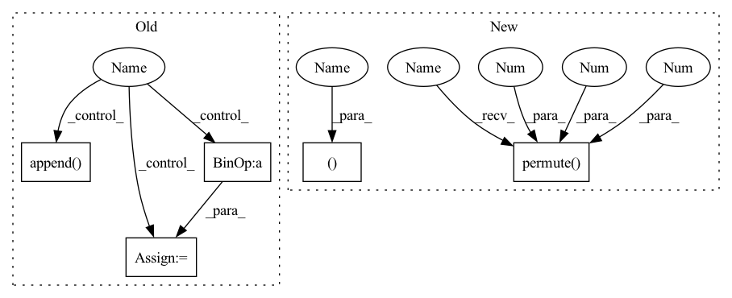

Pattern ID :1539

Before Change
xq = 0
diff = 0
codes = []
for vq in self.vqs:
_xq, _diff, _codes = vq(x - xq)
diff = diff + _diff
xq = xq + _xq
codes.append(_codes)
codes = torch.cat(codes, 1)
return xq, (x - xq).pow(2).mean(), codes
def encode(self, x):
After Change
all_indices.append(indices)
all_losses.append(loss)
out_losses, out_indices = map(torch.stack, (all_losses, all_indices))
return quantized_out, sum(out_losses), out_indices.permute(1, 0, 2)
def encode(self,
x: torch.Tensor,
n_q: Optional[int] = None) -> torch.Tensor:
In pattern: SUPERPATTERN
Frequency: 3
Non-data size: 5
Instances
Fragment ID: 5296337
Project Name: caillonantoine/rave
Commit Name: b58cba5d330c227f2122bc07fcbf7ed068eb91be
Time: 2023-01-24
Author: caillon@ircam.fr
File Name: rave/quantization.py
M Class Name: ResidualVQ
N Class Name: ResidualVectorQuantization
M Method Name: forward(3)
N Method Name: forward(2)
M Parent Class: nn.Module
N Parent Class: nn.Module
M File Name: rave/quantization.py
N File Name: rave/quantization.py
M Start Line: 106
M End Line: 116
N Start Line: 289
N End Line: 307
'>
Before Change
xq = 0
diff = 0
codes = []
for vq in self.vqs:
_xq, _diff, _codes = vq(x - xq)
diff = diff + _diff
xq = xq + _xq
codes.append(_codes)
codes = torch.cat(codes, 1)
return xq, (x - xq).pow(2).mean(), codes
def encode(self, x):
After Change
all_indices.append(indices)
all_losses.append(loss)
out_losses, out_indices = map(torch.stack, (all_losses, all_indices))
return quantized_out, sum(out_losses), out_indices.permute(1, 0, 2)
def encode(self,
x: torch.Tensor,
n_q: Optional[int] = None) -> torch.Tensor:
'>
Fragment ID: 5296340
Project Name: caillonantoine/rave
Commit Name: b58cba5d330c227f2122bc07fcbf7ed068eb91be
Time: 2023-01-24
Author: caillon@ircam.fr
File Name: rave/quantization.py
M Class Name: ResidualVQ
N Class Name: ResidualVectorQuantization
M Method Name: forward(3)
N Method Name: forward(2)
M Parent Class: nn.Module
N Parent Class: nn.Module
M File Name: rave/quantization.py
N File Name: rave/quantization.py
M Start Line: 106
M End Line: 116
N Start Line: 289
N End Line: 307
'>
Before Change
allCodewords = list()
// probability = mixin / (mixin + 1.0)
// rolloutDistribution = Bernoulli(probs=torch.tensor(probability).to(latents[0].device))
for xRaw, prob, squeeze, codebook, k in zip(latents, self._prob, self._squeeze, self._codebook, self._k):
n, c, h, w = xRaw.shape
// [c, k]
codewords = codebook.weight
// [n, c, h, w] -> [h, w, n, c]
encoderIn = xRaw.permute(2, 3, 0, 1)
// [h, w, n, c] -> [h*w, n, c]
encoderIn = self._position(encoderIn).reshape(-1, n, c)
// [h*w, n, c]
// x = self._encoder(posisted)
x = self._encoder(encoderIn)
// x += torch.randn_like(x)
// x = self._dePosition(x.reshape(h, w, n, c)).reshape(-1, n, c)
// x = encoderIn
// [h*w, n, k]
// logit = prob(x, h, w)
// logit = torch.matmul(x / (x ** 2).sum(-1, keepdim=True), codewords / (codewords ** 2).sum(0, keepdim=True))
logit = x @ codewords
// soft = (logit / temperature).softmax(-1)
// if hard:
// hard = logit.argmax(-1)
// hard = F.one_hot(hard, k)
// sample = (hard - soft).detach() + soft
// else:
// sample = soft
sample = F.gumbel_softmax(logit, temperature, hard)
// sample = logit
// [h*w, N, c] <- [h*w, N, k] @ [k, C]
quantized = codebook(sample)
// quantized += torch.randn_like(quantized)
// quantized = sample
// normalize
// quantized /= (k - 0.5) / (2 * k - 2)
// [h*w, n, c]
// quantized -= 0.5 / (k - 1)
// quantized = squeeze(sample, h, w)
posistedQuantized = self._position(quantized.reshape(h, w, n, c)).reshape(-1, n, c)
// mixed = (mixin * encoderIn / (mixin + 1)) + (quantized / (mixin + 1))
// mask = rolloutDistribution.sample((h*w, n, 1)).bool()
// mixed = mask * encoderIn.detach() + torch.logical_not(mask) * quantized
// [h*w, n, c] -> [n, c, h*w] -> [n, c, h, w]
deTransformed = self._decoder(posistedQuantized, posistedQuantized).reshape(h, w, n, c).permute(2, 3, 0, 1)
// deTransformed = quantized.permute(1, 2, 0).reshape(n, c, h, w)
// deTransformed = self._dePosition(deTransformed.reshape(h, w, n, c)).permute(2, 3, 0, 1)
// [n, c, h, w]
quantizeds.append(deTransformed)
codes.append(sample.argmax(-1).permute(1, 0).reshape(n, h, w))
logits.append(logit.reshape(n, h, w, k))
allCodewords.append(codewords.t())
return quantizeds, codes, logits, allCodewords
class TransformerQuantizerRein(nn.Module):
After Change
x = self._encoder(encoderIn)
// similar to scaled dot-product attention
// [h*w, N, c]
quantized, sample, logit = self._attention(x, i, False)
// [h*w, n, c]
posistedQuantized = self._position(quantized.reshape(h, w, n, c)).reshape(-1, n, c)
// [h*w, n, c] -> [n, c, h*w] -> [n, c, h, w]
// deTransformed = quantized.reshape(h, w, n, c).permute(2, 3, 0, 1)
deTransformed = self._decoder(posistedQuantized, posistedQuantized).reshape(h, w, n, c).permute(2, 3, 0, 1)
// [n, c, h, w]
quantizeds.append(deTransformed)
codes.append(sample.argmax(-1).permute(1, 0).reshape(n, h, w))
logits.append(logit.permute(1, 0, 2).reshape(n, h, w, k))
return quantizeds, codes, logits
'>
Fragment ID: 5296344
Project Name: xiaosu-zhu/mcquic
Commit Name: 594ba7cd5c9d147e95ba5bd0b842270302dea2a2
Time: 2021-03-02
Author: xiaosu.zhu@outlook.com
File Name: src/mcqc/models/quantizer.py
M Class Name: TransformerQuantizer
N Class Name: TransformerQuantizer
M Method Name: forward(2)
N Method Name: forward(4)
M Parent Class: nn.Module
N Parent Class: nn.Module
M File Name: src/mcqc/models/quantizer.py
N File Name: src/mcqc/models/quantizer.py
M Start Line: 282
M End Line: 342
N Start Line: 295
N End Line: 320